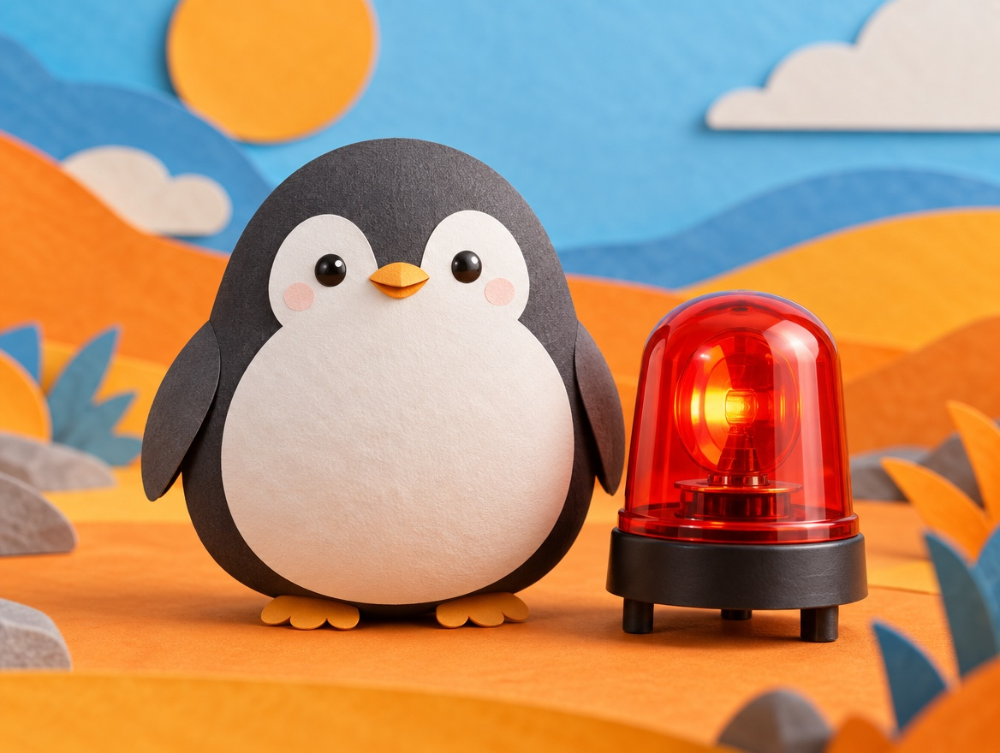

📝 DRAFT · 下書き — まだ本番に出していません · 下書き一覧
🐧 EVERYDAY LIFE⚡ 20 SEC
Feeling embarrassed is just an old alarm from the cave days 🚨

What Stops Us
When you cannot start something, it is often because you do not want to be embarrassed.
Cave Days
They say the feeling of shame is left over from the cave days.
Back then, if your group left you, you could not live.
⚡ TRY IT
The shame alarm: then and now
🚨 Shame alarm
Pick a time. Then slip on the banana.
🚨 BEEP BEEP! "Everyone saw me!"
🔔 beep… "Oops."
🧊 The group walked away. In the cave days, being alone was really dangerous.
☕ "Are you OK?" Then everyone goes back to their coffee. Nothing happened.
🔔 New alarm! It just says, "Oops. That's OK."
Try both times. The alarm is the same, but the danger is not.
🏅 You found it: the alarm is just old.
Safe Today
But today, nothing happens even if you look a little silly.
Old Alarm
The alarm in your head is just an old one.
📚 I learned this from the Japanese blog "Panda no Ondo".